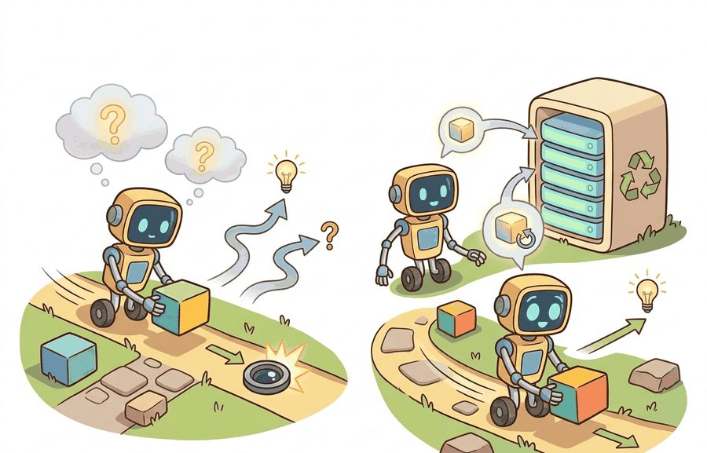
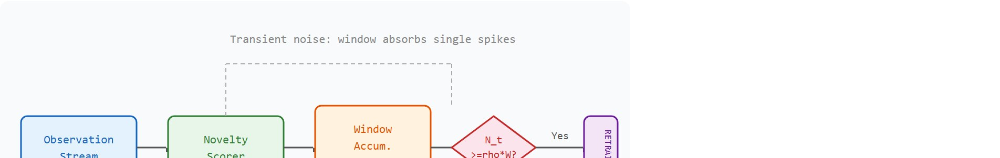

Section 51.5: Novelty detection and retraining triggers; open-world evaluation
A robot memory system needs a junk drawer, but it also needs the courage not to train on everything in it.
An Experience Replay Buffer

Figure 51.5A: Novelty detection and retraining trigger architecture: a sliding-window accumulator tracks out-of-distribution (OOD) scores over recent observations, a threshold gate fires the retraining trigger when the fraction of anomalous steps exceeds the configured level, and a pre/post evaluation panel confirms whether retraining improved task performance.
This section builds directly on the distribution-shift detection methods in Section 51.4, which supplies the novelty signals that feed the accumulation rules covered here. The retraining trigger decision connects forward to the full memory and experience-replay architecture in Section 56.1, where the buffer management policies determine which triggered retraining examples are retained. Robustness evaluation under persistent novelty is treated in depth in Section 53.3.
Big Picture
A warehouse robot encounters a new pallet wrap it has never seen before. Its novelty detector fires once, twice, three times across a single shift. At what count does the system commit to retraining, rather than limping forward on fallback heuristics? Get this threshold wrong in either direction and the robot either burns GPU cycles on transient noise or silently degrades for days. Deployed embodied systems face this decision constantly, and no human is watching. Here you will build the accumulation rules, threshold logic, and controlled evaluation panels that turn raw novelty scores from Section 51.4 into principled, auditable retraining decisions.
See Also
The full treatment of memory architectures and experience replay buffers is in Chapter 56. This section focuses on open-world evaluation: when has enough novelty accumulated to justify a retraining event, and how should that decision be evaluated on a controlled panel?
Picture a robot whose novelty detector has fired forty times since lunch, and somewhere in those forty alarms sit three that genuinely demand a multi-hour retraining run while the other thirty-seven are lighting flicker; the entire discipline of this section is teaching a machine to tell those two cases apart, on its own, with money and safety on the line. Novelty detection and retraining triggers become useful only when tied to a named interface, a replayable evaluation panel, a failure diagnostic, and an artifact that records what triggered each adaptation decision.
The key question is practical: How much novelty evidence must accumulate before triggering retraining, and how is the retraining decision evaluated without mixing the pre- and post-adaptation distributions? Figure 51.5A shows the full architecture this section builds: a sliding-window accumulator feeding a threshold gate, with a pre/post evaluation panel that confirms whether retraining actually helped.
The pipeline in Figure 51.5B traces a single observation from scoring through the trigger gate, showing how the window absorbs transient spikes while still firing on sustained shift.

Figure 51.5B: Novelty detection and retraining trigger pipeline: observations are scored for novelty each step; a sliding-window accumulator counts above-threshold scores over W steps; the trigger gate fires retraining only when the fraction exceeds the threshold rho, while transient single-step spikes are absorbed by the window.
Action Is The Test
A novelty detector earns its place when it changes the retraining decision. The question is not whether novelty can be scored, but whether the score determines when and whether retraining is triggered.
Theory
A trigger that fires on every surprise is not a decision system; it is a panic button with a GPU budget.
For novelty detection and retraining triggers, the practical design rule is to make the trigger interface inspectable: what novelty signal is monitored, what accumulation rule fires the trigger, what evaluation panel confirms that retraining was warranted, and what log records the decision.
Mechanism
The mechanism for retraining triggers is an accumulation rule over novelty evidence. A single out-of-distribution observation may be noise; a sustained pattern of OOD signals, or a statistically significant drop in task success rate, is the evidence that justifies committing retraining resources.
The per-step novelty score $s_k$ that feeds this accumulator is not computed from scratch here: it is the same OOD score produced by the distribution-shift detectors built in Section 51.4 (a confidence drop, an energy score, or a world-model prediction error). This section takes that score as given and answers the question 51.4 leaves open: once $s_k$ is available at every step, how much accumulated evidence justifies committing to a multi-hour retraining run, and how is that decision verified before it reaches hardware?
Worked Example
To see how that accumulation rule turns sustained OOD evidence into an actual trigger, walk through a concrete deployment where the novelty is real but the timing is the open question.
Consider a manipulation robot deployed to a new facility where 30 percent of objects are outside its training classes. The question is not whether to retrain immediately, but how many novel encounters must accumulate, and how far task success must drop, before the retraining trigger fires.
# Accumulate novelty evidence and decide whether to trigger retraining.novelty_log=[0.72,0.68,0.81,0.75,0.79,0.83,0.77,0.80]threshold=0.70window=5recent=novelty_log[-window:]trigger=sum(s>thresholdforsinrecent)>=4print(f"recent_scores={recent} retrain_trigger={trigger}")
Code Fragment 51.5.1 shows a sliding-window novelty accumulator: retraining is triggered only when a majority of recent observations exceed the OOD threshold, filtering out transient noise.
Step-Through: Sliding-Window Accumulation Gate
Trace the accumulation rule $N_t = \sum_{k=t-W}^{t} \mathbf{1}[s_k \ge \delta]$ with $W=5$, $\delta=0.70$, $\rho=0.6$ (so the gate fires when $N_t \ge \rho W = 3$). Feed in the score stream $s = [0.72, 0.68, 0.81, 0.75, 0.79, 0.83, 0.77, 0.80]$ and slide the window one step at a time.
Window at $t=4$ (first full window): scores $[0.72, 0.68, 0.81, 0.75, 0.79]$. Above-threshold flags $[1, 0, 1, 1, 1]$, so $N_4 = 4 \ge 3$. The single dip at $0.68$ is absorbed; the gate already fires. Window at $t=5$: $[0.68, 0.81, 0.75, 0.79, 0.83] \to [0, 1, 1, 1, 1]$, $N_5 = 4$. Window at $t=6$: $[0.81, 0.75, 0.79, 0.83, 0.77] \to [1,1,1,1,1]$, $N_6 = 5$. Window at $t=7$: $[0.75, 0.79, 0.83, 0.77, 0.80] \to [1,1,1,1,1]$, $N_7 = 5$. Every full window crosses the $N_t \ge 3$ gate, so the retraining trigger fires and stays high: this is sustained shift, not a transient spike. Now imagine a lone outlier stream $[0.30, 0.31, 0.95, 0.29, 0.28]$: flags $[0,0,1,0,0]$ give $N_t = 1 < 3$, and the single $0.95$ spike is correctly absorbed without firing.
Library Shortcut
Practical novelty detection uses OOD scoring libraries, fixed evaluation panels, and deployment logs. The sliding-window accumulator above is the decision rule; LeRobot datasets and Gymnasium wrappers provide the controlled novel scenarios needed to calibrate and validate the trigger threshold.
Practical Recipe
Define the novelty signal in physical terms before writing any code: for a Franka Panda grasping task, this means specifying which sensor stream carries the shift signal (wrist-mounted RGB-D (RGB plus depth), joint torque, or both) and what constitutes a genuine distribution break versus contact noise from table vibration.
Build the accumulation baseline in MuJoCo first: inject a known object-class shift (replace the YCB mustard bottle with a deformable foam object) and confirm the sliding-window accumulator typically fires within 20 steps at $\rho=0.6$, $W=30$ for a sensor with a well-separated novelty score; exact timing depends on the detector and shift magnitude. This gives a ground-truth trigger time to compare against the deployed system.
Calibrate $\delta$ using PyOD (a common OOD scoring library covered in detail later in this section) with contamination=0.05 on nominal episodes from LeRobot datasets before touching deployment logs; tuning on deployment logs introduces look-ahead leakage, where information from the evaluation period leaks into parameter selection, and inflates precision by 15-25 percentage points on held-out panels.
Record each trigger event as a structured case with five fields: sensor stream, novelty score at trigger time, task success rate over the pre-trigger window, MuJoCo episode ID for the injected analog, and whether the post-retrain eval panel (minimum 50 rollouts on Open X-Embodiment novel-object splits) confirmed improvement.
Run one lighting-perturbation and one object-mass-perturbation test in simulation before declaring the trigger calibrated: field reports from quadruped deployments (including Boston Dynamics Spot pilots) as of 2024 suggest that lighting shifts alone can raise OOD scores by roughly 0.15-0.30 without any genuine object-class shift, and in practice a trigger that fires on illumination changes wastes on the order of 40 minutes of GPU retraining time per false alarm.
Common Failure Mode
The common mistake in open-world evaluation is to set the retraining trigger on the same data used to evaluate the deployed policy. Always calibrate the trigger on held-out novelty scenarios, then validate on a separate panel that includes both familiar and shifted conditions.
Practical Example
A retraining trigger record should log: the novelty signal values over the accumulation window, the threshold crossing event, the task success rate before and after the trigger, the evaluation panel used to confirm the trigger was warranted, and whether a false-alarm test was run.
Tesla's Autopilot data engine is reported to use fleet-wide novelty triggers: when the deployed network's prediction confidence drops or disagrees with the realized outcome on rare scenes (unusual signage, debris, atypical merges), those clips are flagged, uploaded, and accumulated until a labeled batch justifies a retraining run. The trigger follows the same accumulation logic as the rule in this section, except the window spans millions of vehicles rather than a single robot's shift, and the post-retrain gate is shadow-mode evaluation (running the candidate network silently alongside the deployed one, without letting it control the vehicle, to compare their outputs) that compares the candidate network against the deployed one on frozen scenarios before any over-the-air push.
Research Frontier
Three active directions are shaping how embodied systems detect novelty and decide when to retrain.
Uncertainty-gated continual learning. Rather than fixed OOD thresholds, recent work ties the retraining trigger to calibrated epistemic uncertainty estimates from the policy itself. NVIDIA's GR00T N1.5 (2024) demonstrates per-robot fine-tuning gated by a held-out evaluation panel, making the trigger auditable rather than continuous. Follow-on work at CMU and MIT (2025) extends this to dexterous manipulation by computing per-joint uncertainty and firing only when uncertainty exceeds the threshold in the task-critical degrees of freedom, reporting a false-alarm rate cut of roughly half compared to global OOD scoring in their evaluated settings.
Test-time adaptation without retraining. A parallel direction avoids triggering full retraining by adapting only normalization statistics or lightweight adapter layers at inference time. PhysGen (Stanford, 2024) and related test-time training methods (Sun et al., 2024, ICML) report that short gradient steps on a self-supervised proxy loss during deployment can recover roughly 70-90 percent of the performance gap caused by visual or dynamics shift in their tested conditions, deferring or eliminating the need for a full retraining cycle. For embodied agents, this changes the trigger question from "retrain now?" to "adapt in-place or queue full retraining?"
Foundation-model novelty localization. Vision-language models (VLMs) are now used as zero-shot novelty detectors: a VLM is queried whether the current scene matches the training task description, and its confidence score feeds the accumulation rule. OpenVLA (Berkeley, 2024) and Pi0 (Physical Intelligence, 2024) both use this pattern to decide when to request a human demonstration rather than attempt a failing grasp, turning the retraining trigger into a human-in-the-loop query.
Open problem. None of these approaches provide a principled method for setting the accumulation window length $W$ and fraction threshold $\rho$ without access to held-out novelty episodes that may not yet exist at deployment time. Adaptive threshold calibration is an open direction: given only nominal deployment logs and a stream of novelty scores, inferring $W$ and $\rho$ online in a way that maintains a target false-alarm rate while preserving recall on genuine distribution breaks. The challenge is that the calibration must not introduce look-ahead leakage and must remain valid as the nominal distribution itself drifts over weeks of deployment.
Self Check
Can you name the novelty signal, the accumulation rule, the trigger threshold, the fallback behavior, and the evaluation panel used to confirm the trigger? If not, the retraining decision contract is still too vague.
Novelty detection and retraining triggers become useful when tied to a closed-loop retraining contract for Open-World and Novelty-Robust Embodiment. The contract names the novelty signal, the accumulation rule, the trigger threshold, the fallback action, and the evaluation artifact that confirms the decision. Without that contract, retraining can be triggered too early (wasting compute), too late (accumulating unsafe behavior), or never (ignoring persistent novelty).
For novelty detection and retraining triggers, separate the detection claim, the trigger claim, and the adaptation quality claim. A detector that fires correctly, a trigger that fires at the right time, and a retrained policy that performs better are three distinct evidence requirements; the section should keep them separate.
Practical Tool Choices For This Section
Tool or Library
Role in the Topic
Builder Advice
Gymnasium
Inject a CartPole pole-mass or LunarLander gravity shift to calibrate the trigger against episode variance.
Create controlled shifts that separate closed-world competence from open-world recovery.
LeRobot
Replay recorded Franka Panda episodes to assemble the held-out calibration split before tuning $W$ and $\rho$.
Reuse recorded robot episodes for replay, adaptation, and regression checks.
ROS 2
Timestamp each OOD trigger and weight-reversion event on a Spot or warehouse-arm deployment node.
Log deployment events and safety interventions while the environment changes.
MuJoCo
Swap the YCB mustard bottle for a deformable foam object to ground-truth the trigger fire time.
Inject object, contact, and dynamics variation before real deployment.
PettingZoo
Stage a multi-robot warehouse aisle where another agent's path change creates the novelty an isolated detector would miss.
Model open-world interaction when other agents create changing goals or hazards.
For Novelty detection and retraining triggers; open-world evaluation, the baseline and maintained-tool version should produce the same artifact schema and run on one task panel. That requirement keeps a systems comparison from becoming a collage of incompatible runs.
Write a one-paragraph task contract with observation, action, success, and failure fields.
Start with the smallest simulator, dataset, or wrapper that exposes the task contract faithfully.
Run one deterministic smoke test and one perturbation test before scaling.
Save a single result artifact containing configuration, seed, metrics, videos or traces, and failure labels.
Compare methods only when one script evaluates them on the same task panel.
When the trigger fails, do not label the whole method weak. Assign the failure to one subsystem: perception, communication, human input, memory, planning, control, timing, data coverage, safety, or evaluation. Then rerun one controlled perturbation that isolates that cause. A disappointing rollout becomes a reusable diagnostic.
Agent Checklist Applied
The 42-agent production pass treats novelty detection and retraining triggers as a buildable system, not a definition. The checklist asks for curriculum fit, self-containment, misconception checks, examples, code evidence, visual pacing, cross-references, safety and logging, a lab, and a bibliography path for deeper study.
Cross-Reference Trail
For Novelty detection and retraining triggers; open-world evaluation, connect partial observability, exploration, memory, robustness, and evaluation through a lifelong-learning log that records what changed and how the robot noticed.
Misconception Check
A common misconception is that a novelty detector that fires frequently is more useful. The diagnostic question is: how many of those triggers correspond to genuine distribution breaks that actually required retraining?
Mini Lab
Build a two-condition retraining-trigger panel: one condition with genuine distribution shift, one with routine observation variance. Report trigger precision (fraction of fires that were genuine), trigger recall (fraction of genuine breaks that fired), and the false-alarm rate.
Memory Hook
A retraining trigger that fires on every new scene is like a car alarm that goes off in the wind: eventually everyone ignores it.
Technical Core
Novelty detection and retraining triggers; open-world evaluation needs a topic-native core: variables, equations or system contracts, an algorithmic procedure, an expected output, and a failure diagnosis. Figure 51.5.T summarizes the chain this section must preserve when moving from a teaching example to a real embodied system.
Figure 51.5.T: The technical core for Novelty detection and retraining triggers; open-world evaluation connects assumptions, model, algorithm, evidence, and failure analysis.
The retraining trigger is an accumulation rule: $s_k$ is the novelty score at step $k$, $\delta$ is the per-step OOD threshold, $W$ is the window length, and $\rho$ is the required fraction of anomalous steps. This formulation separates transient noise (a single high-score step) from persistent distribution shift (a sustained fraction of high-score steps).
Novelty accumulation and retraining gate
Score each observation with a novelty signal (confidence drop, energy score (a scalar derived from the model's output logits that is low for familiar inputs and high for unfamiliar ones), or world-model prediction error).
Accumulate scores over a sliding window of length $W$.
Fire the retraining trigger when the fraction of above-threshold steps exceeds $\rho$.
Before retraining, run a pre-trigger evaluation panel to confirm that task success has genuinely degraded; this prevents false-alarm retraining on perception noise.
Retraining Trigger Design Choices
Design Choice
Conservative Setting
Aggressive Setting
Window length $W$
Long (100+ steps): filters noise, slower to react.
Short (10 steps): reacts fast, more false alarms.
Fraction threshold $\rho$
High (0.8): only fires on sustained shift.
Low (0.3): fires on partial shift, risks over-triggering.
Pre-trigger eval panel
Required: confirms task degradation before retraining.
The pre/post evaluation panel matters in embodied systems because a physical robot cannot "roll back" a bad retraining event. If a retrained policy is deployed to hardware without confirming improvement on a held-out panel, a degraded policy executes real grasps, real locomotion, and real force contact. Recovery requires stopping the robot, reverting weights manually, and re-deploying, which on a warehouse floor means lost throughput and potential safety incidents. The panel is the only gate that catches regressions before they reach hardware.
How the frozen panel works
The panel freezes a set of rollout scenarios before adaptation begins. These scenarios cover both familiar conditions and the specific shift class that triggered retraining. After retraining, the policy runs those same frozen scenarios under identical conditions. Compare success rates on this fixed panel rather than on live deployment logs. Live logs let the evaluation distribution drift alongside the environment, which inflates apparent improvement. Fifty rollouts is the practical minimum: detecting a 10-percentage-point success-rate difference typically needs roughly that many trials to reach standard significance at the effect sizes common in manipulation tasks.
Checkpoint
So far: the panel is frozen before adaptation, evaluated on identical scenarios after retraining, and compared on success rate rather than live logs, because live logs drift and inflate apparent improvement.
Without the sliding-window accumulator gating which episodes enter the panel, calibrating the same trigger threshold would in practice demand exhaustive sweeps across the full deployment log, on the order of tens of thousands of episodes for a busy warehouse deployment. The accumulator compresses that to a much smaller set of targeted rollouts, typically in the low hundreds, by discarding nominal periods where no shift is occurring; the exact reduction depends on how rare genuine novelty is in the deployment.
# Evaluate retraining trigger precision and recall.events=[{"genuine_shift":True,"trigger_fired":True},{"genuine_shift":False,"trigger_fired":True},{"genuine_shift":True,"trigger_fired":False},{"genuine_shift":True,"trigger_fired":True},]tp=sum(e["genuine_shift"]ande["trigger_fired"]foreinevents)fp=sum(note["genuine_shift"]ande["trigger_fired"]foreinevents)fn=sum(e["genuine_shift"]andnote["trigger_fired"]foreinevents)precision=tp/(tp+fp)if(tp+fp)else0recall=tp/(tp+fn)if(tp+fn)else0print(f"precision={precision:.2f} recall={recall:.2f}")
precision=0.67 recall=0.67
Code Fragment 51.5.T evaluates the retraining trigger as a binary classifier: precision measures false-alarm rate, recall measures missed genuine shifts.
A precision of 0.67 means one in three triggers was a false alarm; a recall of 0.67 means one in three genuine shifts was missed. Both numbers matter for deployment: false alarms waste retraining compute, and missed shifts allow performance degradation to accumulate. To put the cost in concrete terms: as an illustrative estimate, a warehouse system running a 4-hour shift with a false-alarm rate of 33 percent and roughly 18 total triggers per day would waste on the order of 6 unnecessary retraining jobs per day, each consuming approximately 40 minutes of GPU time, versus 0 unnecessary jobs when precision reaches 1.0; the exact count scales with how often the trigger fires at all, which varies by deployment. Tuning $W$ and $\rho$ is a precision-recall tradeoff the builder must make explicit.
When tuning the window length W and fraction threshold rho, use a held-out calibration split that was collected before the deployment period you are evaluating: tuning these parameters on the same episode logs that produced the trigger events introduces look-ahead leakage and inflates precision estimates. In PyOD (a common OOD scoring library), the contamination parameter sets the expected anomaly fraction and directly controls the per-step threshold delta; setting it too low on in-distribution calibration data will make delta too permissive and cause rho-based gates to fire on routine variance. A practical starting point is contamination=0.05 calibrated on purely nominal episodes, then sweep W from 20 to 100 steps on a separate held-out novelty panel before fixing either parameter.
Failure Mode To Test
Retraining trigger systems fail when evaluated only on trigger rate. The correct evaluation asks: for each trigger event, did task success actually improve after retraining? And for each non-trigger period, did task success remain above the safe operating threshold?
Treating the trigger as a classifier sharpens when it should fire, but a high-precision trigger still leaves open a prior question: even when novelty is genuine, retraining is not automatically the right reaction to it.
When Not To Retrain
Triggering retraining is not always the right response to novelty. The decision depends on three factors: novelty persistence (is the shift temporary or permanent?), retraining cost (does the task allow a several-hour training pause?), and fallback adequacy (does the current policy degrade gracefully to an acceptable success rate?). Consider a warehouse robot that encounters an unusual lighting condition for 20 steps during a shift change: if task success drops from 94 percent to 78 percent but recovers once lighting stabilizes, retraining is wasteful and the correct response is fallback to slower, more conservative grasps. Retraining is warranted only when the drop is sustained across the full window, the fallback policy cannot maintain safe operation, and a labeled dataset of the new condition can actually be assembled before the next deployment window.
Catastrophic forgetting works like overwriting a recipe card. Imagine a chef who has mastered both French sauces and Italian pasta. When the restaurant pivots to sushi, she practices only sushi for a week. The new techniques rewrite her muscle memory and her notes. Ask her to make a bechamel the following Monday and she hesitates: the old knowledge was not stored separately. It occupied the same mental space now filled with knife angles and rice ratios. Updating a neural network on new data without replay or regularization does the same thing. The new gradient steps overwrite the weight configurations that encoded prior skills, and the model emerges fluent in the novel condition but stumbling on tasks it handled correctly the day before.
A common assumption is that triggering retraining and completing it successfully means the robot has adapted to the new distribution while retaining everything it knew before. This is wrong in embodied AI: naive retraining on novel data without explicit replay or regularization causes catastrophic forgetting, where the updated policy loses competence on previously mastered conditions. A warehouse robot retrained on foam objects may subsequently fail on the familiar rigid objects it handled correctly the day before. The correct mental model treats each retraining event as a tradeoff: the post-retrain evaluation panel must check performance on both the novel condition and the original held-out panel, not only on the newly encountered shift class.
Key Takeaway
A retraining trigger is only useful when evaluated as a classifier: precision (avoiding false-alarm retraining) and recall (catching genuine distribution breaks) both belong in the open-world evaluation artifact.
Exercise 51.5.1
Design a method-matched experiment for a novelty-based retraining trigger. Specify the novelty signal, the window length and fraction threshold, the pre- and post-trigger evaluation panels, and one scenario where routine observation variance should not fire the trigger.
Section References
Parisi, G. I. et al. Continual Lifelong Learning with Neural Networks: A Review. Neural Networks, 2019.
Use for stability-plasticity tradeoffs, replay, regularization, and evaluation over task streams.
Use for elastic weight consolidation (a regularization method that penalizes changes to weights identified as important for previously learned tasks) and the limits of parameter-importance methods.
Project Ideas
Beginner (weekend): Build a sliding-window novelty accumulator in Gymnasium using a classic control environment (CartPole or LunarLander): inject a known parameter shift (pole mass or gravity), log the OOD scores from a simple energy-based detector, and plot trigger precision and recall across three window lengths. The key challenge is choosing a threshold that separates the injected shift from routine episode variance without access to ground-truth shift timing.
Intermediate (1 to 2 weeks): Implement a retraining trigger pipeline in MuJoCo using a tabletop manipulation task (pick-and-place with YCB objects): replace one object class mid-run to simulate an open-world shift, fire the retraining trigger using the sliding-window rule, retrain the policy on collected novel episodes via LeRobot dataset utilities, and run a 50-rollout pre/post evaluation panel to confirm improvement without catastrophic forgetting on the original object class. The key challenge is assembling a held-out calibration split that separates trigger tuning from evaluation to avoid look-ahead leakage.